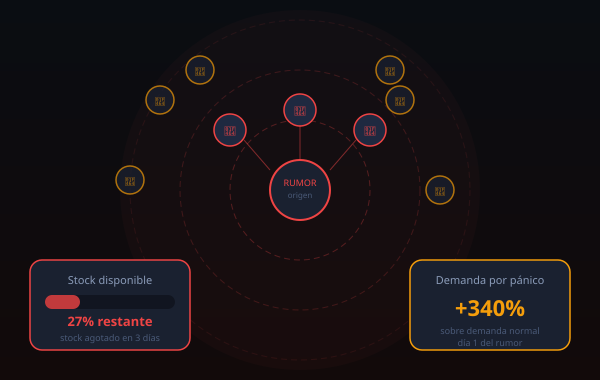
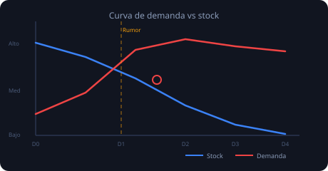
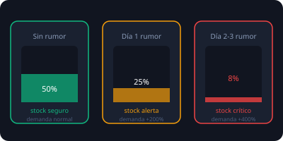

Simulador de
Rumor de Escasez
y Pánico
Herramienta educativa que modela cómo un rumor de desabastecimiento dispara las compras por pánico, eleva la demanda real y puede agotar el stock disponible en horas.

Contexto del problema
Cuando circulan rumores de escasez, el comportamiento de compra cambia drásticamente.
El rumor
Un mensaje o noticia, verdadera o falsa, genera incertidumbre sobre la disponibilidad futura de un producto básico.
Compras por pánico
El miedo a quedarse sin el producto hace que cada persona compre mucho más de lo que necesita, multiplicando la demanda real.
Desabastecimiento real
Aunque el stock era suficiente para la demanda normal, el incremento artificial agota las reservas y convierte el rumor en realidad.
El ciclo
El desabastecimiento causado por el pánico refuerza el rumor original, generando un ciclo de retroalimentación que escala rápidamente.


Simulador interactivo
Ingresa los datos y observa cómo cambia la demanda ante un rumor de escasez.
Parámetros de entrada
Ingresa los datos y presiona Calcular simulación para ver los resultados.
Tabla de proyección diaria
Evolución del stock durante los próximos días bajo demanda de pánico.
Ejecuta la simulación para generar la proyección diaria.
| Día | Demanda normal | Demanda pánico | Stock restante | Estado |
|---|
Casos de estudio para probar
Ejemplos predefinidos para comprobar que la simulación funciona correctamente.
Mercado de barrio
Rumor moderado, stock suficiente
| Dato | Valor |
|---|---|
| Demanda normal | 200 unid/día |
| % aumento rumor | 80% |
| Stock disponible | 1 500 unidades |
| Familias | 60 familias |
Supermercado urbano
Rumor fuerte, stock crítico
| Dato | Valor |
|---|---|
| Demanda normal | 500 unid/día |
| % aumento rumor | 200% |
| Stock disponible | 2 000 unidades |
| Familias | 150 familias |
Tienda rural
Demanda baja, rumor intenso
| Dato | Valor |
|---|---|
| Demanda normal | 80 unid/día |
| % aumento rumor | 300% |
| Stock disponible | 600 unidades |
| Familias | 30 familias |
Conclusiones
Lo que el modelo matemático nos enseña sobre el comportamiento de pánico.
Hallazgos matemáticos
- Un rumor del 100% duplica la demanda y reduce a la mitad la duración del stock.
- Un rumor del 200% triplica la demanda y agota en un tercio del tiempo normal.
- La demanda por pánico crece linealmente con el porcentaje, pero el impacto en el stock es exponencial.
- Incluso un rumor modesto del 50% puede generar escasez real si el stock está al límite.
Implicaciones sociales
- El pánico colectivo puede convertir un rumor falso en una escasez real.
- La información veraz y oportuna es la herramienta más efectiva contra el desabasto inducido.
- Las políticas de racionamiento temporal pueden evitar que el ciclo de pánico escale.
- La educación sobre el comportamiento de manada reduce la vulnerabilidad de la comunidad.